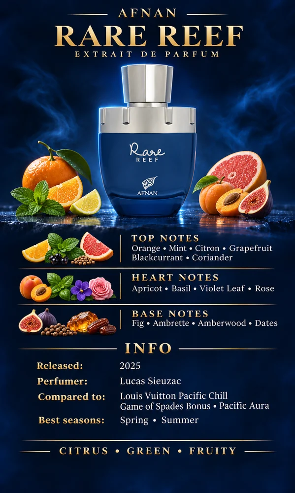
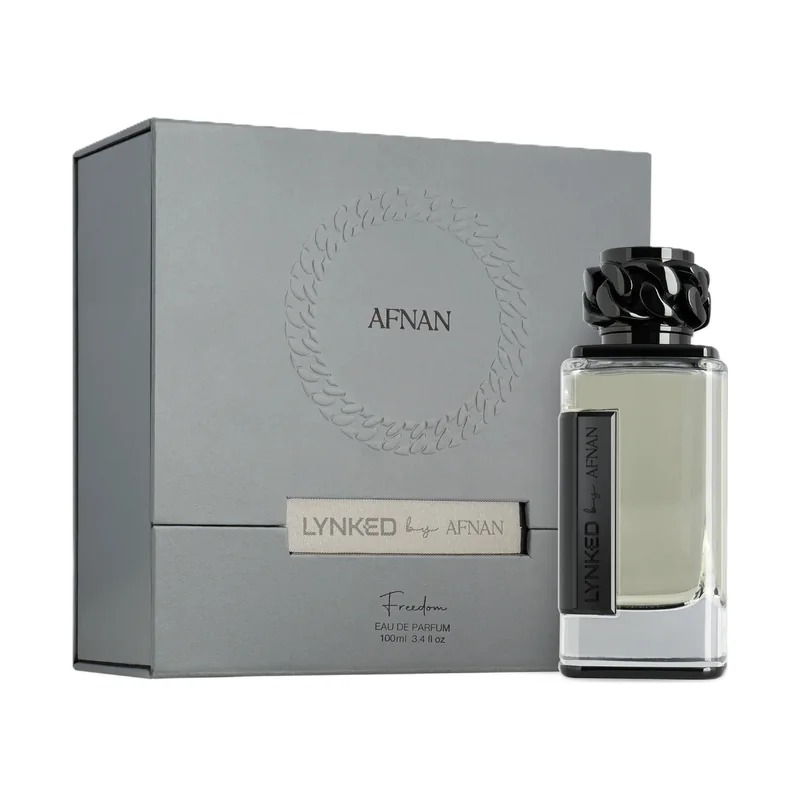
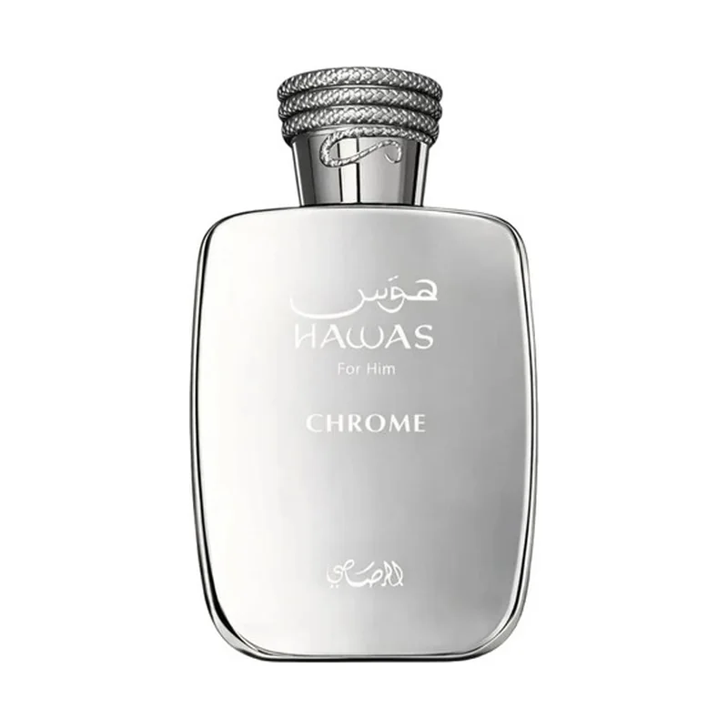

Afnan
Rare Reef Extrait de Parfum
γ Gamma Inspired by · Extrait de Parfum · 2025 In collection
Randy's rating7/10
Public rating8/10
Overall R15.7/21
Normalized N0.748
R = 7 × 1.1 + 8 × 1 = 15.7 of 21 · N = 15.7 ÷ 21 = 0.748 How scores work
Notes
Top notes
- orange
- mint
- citron
- grapefruit
- blackcurrant
- coriander
Heart notes
- apricot
- basil
- violet leaf
- rose
Base notes
- fig
- ambrette
- amberwood
- dates
Details
| House | Afnan |
|---|---|
| Type | Inspired by · γ Gamma |
| Concentration | Extrait de Parfum |
| Released | 2025 |
| Perfumer | Lucas Sieuzac |
| Scent family | Fruity, Aromatic, Citrus |
| Best seasons | Spring, Summer |
| Similar to | Louis Vuitton Pacific Chill Game of Spades Bonus / Pacific Aura |
Sources
Fragrantica 4.23/5 (about 8.5/10) from 2,633 votes; Parfumo 7.7/10 from 411 ratings. Pacific Chill-inspired citrus-green extrait; rounded to 8. Checked 2026-11-06.
Other Suggestions
-
 AfnanTurathi Blue Homme Eau de ParfumRandy9Public 8N 0.852
AfnanTurathi Blue Homme Eau de ParfumRandy9Public 8N 0.852 -

AfnanLynked Freedom Eau de ParfumRandy—Public 9N — -
 AfnanTurathi Electric Eau de ParfumRandy—Public 8N —
AfnanTurathi Electric Eau de ParfumRandy—Public 8N — -
 English LaundryLondon Eau de ParfumRandy7Public 8N 0.748
English LaundryLondon Eau de ParfumRandy7Public 8N 0.748 -

RasasiHawas Chrome Eau de ParfumRandy—Public 8N —